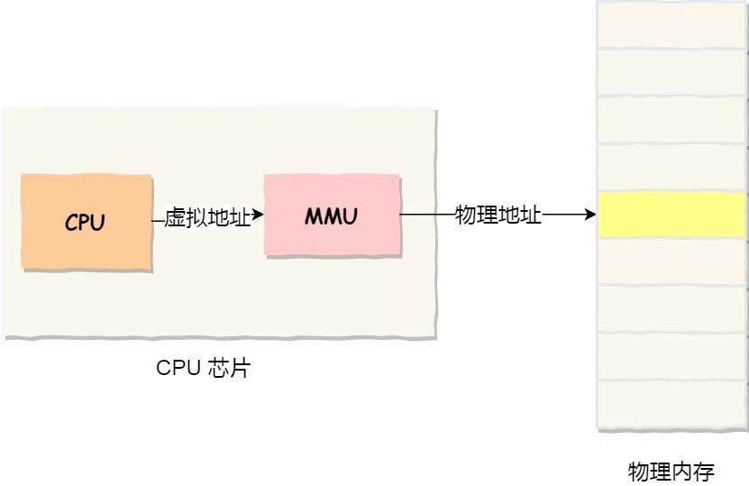

概述
- 总结Linux内存管理原理. 讲述虚拟内存、分段、分页的进化过程.
- 计算机启动时, 分页机制必须提交准备好才可以运行真正的
start_kernel()函数.
虚拟内存的由来
如果你是电子相关专业的，肯定在大学里捣鼓过单片机。
单片机是没有操作系统的，所以每次写完代码，都需要借助工具把程序烧录进去，这样程序才能跑起来。
另外，单片机的 CPU 是直接操作内存的「物理地址」。

在这种情况下，要想在内存中同时运行两个程序是不可能的。如果第二个程序在 2000 的位置写入一个新的值，将会擦掉第一个程序存放在相同位置上的所有内容，所以同时运行两个程序是根本行不通的，这两个程序会立刻崩溃。
操作系统是如何解决这个问题呢？
这里关键的问题是这两个程序都引用了绝对物理地址，而这正是我们最需要避免的。
我们可以把进程所使用的地址「隔离」开来，即让操作系统为每个进程分配独立的一套「虚拟地址」，人人都有，大家自己玩自己的地址就行，互不干涉。但是有个前提每个进程都不能访问物理地址，至于虚拟地址最终怎么落到物理内存里，对进程来说是透明的，操作系统已经把这些都安排的明明白白了。

操作系统会提供一种机制，将不同进程的虚拟地址和不同内存的物理地址映射起来。
如果程序要访问虚拟地址的时候，由操作系统转换成不同的物理地址，这样不同的进程运行的时候，写入的是不同的物理地址，这样就不会冲突了。
于是，这里就引出了两种地址的概念：
-
我们程序所使用的内存地址叫做虚拟内存地址（Virtual Memory Address）
-
实际存在硬件里面的空间地址叫物理内存地址（Physical Memory Address）。
操作系统引入了虚拟内存，进程持有的虚拟地址会通过 CPU 芯片中的内存管理单元（MMU）的映射关系，来转换变成物理地址，然后再通过物理地址访问内存，如下图所示：

操作系统是如何管理虚拟地址与物理地址之间的关系？
主要有两种方式，分别是内存分段和内存分页，分段是比较早提出的，我们先来看看内存分段。
了解分段的原理之前我们需要提前说明一些CPU寄存器.
著名的CPU寄存器
- cs （代码段寄存器）
- ss （栈段寄存器）
- ds （数据段寄存器）
- gdtr寄存器, 存放
全局描述符GDT（Global Descriptor Table)的地址.- GDT本身则存放在内存中.
- idtr，存放中断向量表的地址.
中断向量表IDT(Interrupt Descriptor Table)有多行，每一行代表某一个中断号发生之后，要执行的函数.- IDT本身则存放在内存中
内存分段
程序是由若干个逻辑分段组成的，如可由代码分段、数据分段、栈段、堆段组成。不同的段是有不同的属性的，所以就用分段（Segmentation）的形式把这些段分离出来。
分段机制下的虚拟地址由两部分组成，段选择子和段内偏移量。
-
段选择子就保存在段寄存器里面。段选择子里面最重要的是段号，用作段表的索引。段表里面保存的是这个段的基地址、段的界限和特权等级等。 -
虚拟地址中的段内偏移量应该位于 0 和段界限之间，如果段内偏移量是合法的，就将段基地址加上段内偏移量得到物理内存地址。
-
这里提到的
段表, 就是全局描述符表GDT（Global Descriptor Table), 它的实际位置存放在内存中, CPU的gdtr寄存器存放了GDT的地址.
在上面了，知道了虚拟地址是通过段表与物理地址进行映射的，分段机制会把程序的虚拟地址分成 4 个段，每个段在段表中有一个项，在这一项找到段的基地址，再加上偏移量，于是就能找到物理内存中的地址，如下图：

如果要访问段 3 中偏移量 500 的虚拟地址，我们可以计算出物理地址为，段 3 基地址 7000 + 偏移量 500 = 7500。
如何从虚拟地址得到对应的物理地址
【段选择子+段偏移地址】中的段选择子可以认为是一个索引，这个索引指向了全局段描述符表中的一项，全局段描述表存储在内存中，它的起始地址存储在全局段描述符寄存器中。
全局段描述符表有很多个段描述符，每个段描述符占用8个字节，这个段描述符里面就包括了段基址，另外还有一些安全性相关的描述信息例如段的可读，可写，可执行，段的大小等。
段选择子存储在了段寄存器中，总共16位,其中高13位就是全局段描述表的索引。
段选择符的结构：
当CPU开始执行代码段的第一条指令时,会将代码段的选择子放入到CS段寄存器中,然后CPU从段寄存器中的获取段选择子，然后截取选择子的高13位获取索引，然后根据全局描述符表寄存器的地址找到全局描述符表的起始地址，根据起始地址+索引*8找到段描述符,然后根据段描述符获取段的基址，段的基址加上ip寄存器中的偏移地址就是指令的物理地址，如下图所示1~6步骤所示

当CPU执行到0x00600000处的代码指令时，该指令为MOV AX,[0]，该指令的意思是把地址0处的数据存储到AX寄存器，这个0就是数据段的偏移地址，此时CPU会将数据段的选择子加入到DS段寄存器中,然后CPU获取段选择的高13位获取索引，然后根据全局描述符表寄存器的地址找到全局描述符表的起始地址，根据起始地址+索引*8找到段描述符,然后根据段描述符获取段的基址，段的基址加上数据段的偏移地址就是数据的物理地址，如下图1~6步骤所示

分段机制的问题
分段的办法很好，解决了程序本身不需要关心具体的物理内存地址的问题，但它也有一些不足之处：
-
第一个就是内存碎片的问题。
-
第二个就是内存交换的效率低的问题。
接下来，说说为什么会有这两个问题。
我们先来看看，分段为什么会产生内存碎片的问题？
我们来看看这样一个例子。假设有 1G 的物理内存，用户执行了多个程序，其中：
-
游戏占用了 512MB 内存
-
浏览器占用了 128MB 内存
-
音乐占用了 256 MB 内存。
这个时候，如果我们关闭了浏览器，则空闲内存还有 1024 - 512 - 256 = 256MB。
如果这个 256MB 不是连续的，被分成了两段 128 MB 内存，这就会导致没有空间再打开一个 200MB 的程序。

这里的内存碎片的问题共有两处地方：
-
外部内存碎片，也就是产生了多个不连续的小物理内存，导致新的程序无法被装载；
-
内部内存碎片，程序所有的内存都被装载到了物理内存，但是这个程序有部分的内存可能并不是很常使用，这也会导致内存的浪费；
针对上面两种内存碎片的问题，解决的方式会有所不同。
解决外部内存碎片的问题就是内存交换。
可以把音乐程序占用的那 256MB 内存写到硬盘上，然后再从硬盘上读回来到内存里。不过再读回的时候，我们不能装载回原来的位置，而是紧紧跟着那已经被占用了的 512MB 内存后面。这样就能空缺出连续的 256MB 空间，于是新的 200MB 程序就可以装载进来。
这个内存交换空间，在 Linux 系统里，也就是我们常看到的 Swap 空间，这块空间是从硬盘划分出来的，用于内存与硬盘的空间交换。
再来看看，分段为什么会导致内存交换效率低的问题？
对于多进程的系统来说，用分段的方式，内存碎片是很容易产生的，产生了内存碎片，那不得不重新 Swap 内存区域，这个过程会产生性能瓶颈。
因为硬盘的访问速度要比内存慢太多了，每一次内存交换，我们都需要把一大段连续的内存数据写到硬盘上。
所以，如果内存交换的时候，交换的是一个占内存空间很大的程序，这样整个机器都会显得卡顿。
为了解决内存分段的内存碎片和内存交换效率低的问题，就出现了内存分页。
内存分页
分段的好处就是能产生连续的内存空间，但是会出现内存碎片和内存交换的空间太大的问题。
要解决这些问题，那么就要想出能少出现一些内存碎片的办法。另外，当需要进行内存交换的时候，让需要交换写入或者从磁盘装载的数据更少一点，这样就可以解决问题了。这个办法，也就是内存分页（Paging）。
分页是把整个虚拟和物理内存空间切成一段段固定尺寸的大小。这样一个连续并且尺寸固定的内存空间，我们叫页（Page）。在 Linux 下，每一页的大小为 4KB。
虚拟地址与物理地址之间通过页表来映射，如下图：
页表实际上存储在 CPU 的内存管理单元 （MMU） 中，于是 CPU 就可以直接通过 MMU，找出要实际要访问的物理内存地址。
而当进程访问的虚拟地址在页表中查不到时，系统会产生一个缺页异常，进入系统内核空间分配物理内存、更新进程页表，最后再返回用户空间，恢复进程的运行。
分页是怎么解决分段的内存碎片、内存交换效率低的问题？
由于内存空间都是预先划分好的，也就不会像分段会产生间隙非常小的内存，这正是分段会产生内存碎片的原因。而采用了分页，那么释放的内存都是以页为单位释放的，也就不会产生无法给进程使用的小内存。
如果内存空间不够，操作系统会把其他正在运行的进程中的「最近没被使用」的内存页面给释放掉，也就是暂时写在硬盘上，称为换出（Swap Out）。一旦需要的时候，再加载进来，称为换入（Swap In）。所以，一次性写入磁盘的也只有少数的一个页或者几个页，不会花太多时间，内存交换的效率就相对比较高。

更进一步地，分页的方式使得我们在加载程序的时候，不再需要一次性都把程序加载到物理内存中。我们完全可以在进行虚拟内存和物理内存的页之间的映射之后，并不真的把页加载到物理内存里，而是只有在程序运行中，需要用到对应虚拟内存页里面的指令和数据时，再加载到物理内存里面去。
分页机制下，虚拟地址和物理地址是如何映射的？
在分页机制下，虚拟地址分为两部分，页号和页内偏移。页号作为页表的索引，页表包含物理页每页所在物理内存的基地址，这个基地址与页内偏移的组合就形成了物理内存地址，见下图。

Linux下页表
- Linux 中使用
struct mm_struct表示进程的虚拟地址空间 mm_struct中有一个pgd域, 指向struct pgd_t表示进程的页表

总结一下，对于一个内存地址转换，其实就是这样三个步骤：
-
把虚拟内存地址，切分成页号和偏移量；
-
根据页号，从页表里面，查询对应的物理页号；
-
直接拿物理页号，加上前面的偏移量，就得到了物理内存地址。
下面举个例子，虚拟内存中的页通过页表映射为了物理内存中的页，如下图：